IV-01 / Assets Logo.
The Farm2Vet identity is a paired system — a wordmark and an emblem, each in a colour treatment for light surfaces and a knock-out treatment for dark surfaces. This page lists the four SVGs in use and the brand-colour tokens that drive them.
Variants.
Four files, two marks, two treatments. The wordmark is the default identity. The emblem stands in only where horizontal space is constrained.


Tokens.
The mark resolves to two brand greens and to pure white. Nothing
else. The two greens are the same primitives the rest of the system
reaches for as --primary-500 and --primary-600.
| Token | Resolves to | Role | Preview |
|---|---|---|---|
| Brand greens | |||
| --primary-500 | #6EC13E | Wordmark "2vet"; emblem leaf accent. | |
| --primary-600 | #5DAC2F | Wordmark "Farm"; emblem frame. | |
| Knock-out | |||
| --white-base | #FFFFFF | Mark fills on dark / brand-coloured surfaces. | |